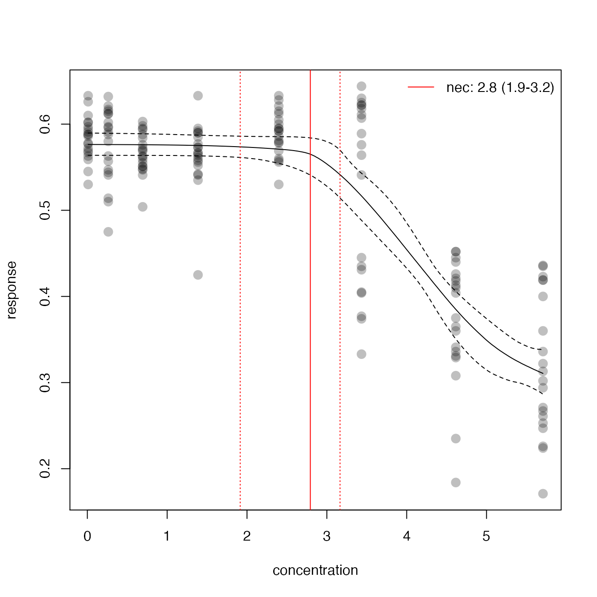
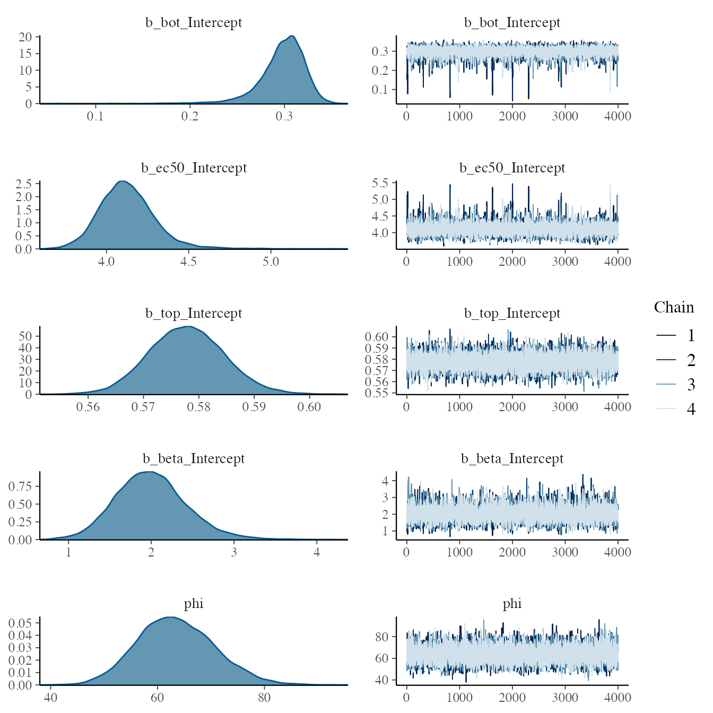
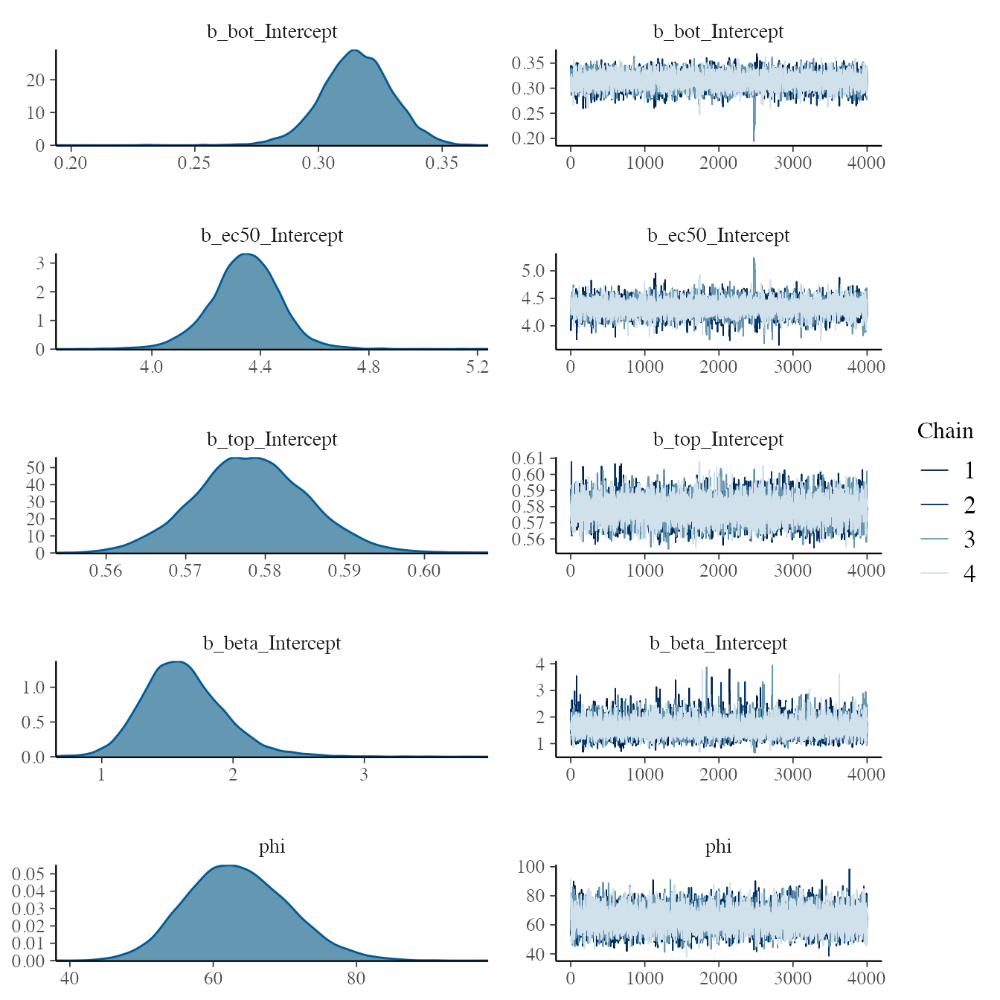
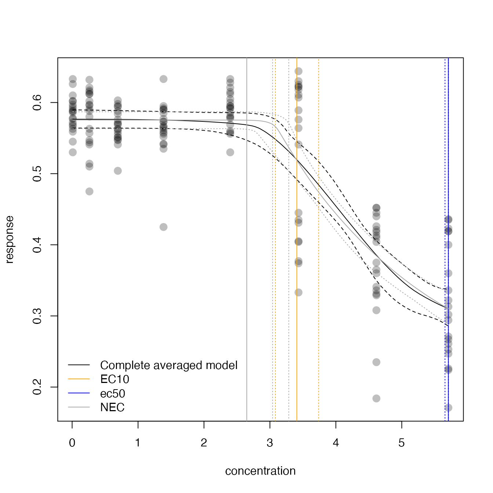

bayesnec
The bayesnec is an R package to fit concentration(dose) - response curves to toxicity data, and derive No-Effect-Concentration (NEC), No-Significant-Effect-Concentration (NSEC), and Effect-Concentration (of specified percentage ‘x’, ECx) thresholds from non-linear models fitted using Bayesian MCMC fitting methods via brms (Bürkner 2017; ???) and stan. The package is an adaptation and extension of an initial package jagsNEC (Fisher, Ricardo, and Fox 2020) which as based on the R2jags package (Su and Yajima 2015) and jags (Plummer 2003).
The background of bayesnec is covered in the Single model usage vignette. Here we explain multi model usage using bayesnec. In bayesnec it is possible to fit a a custom model set, specific model set or all of the available models. When multiple models are specified the bnec function returns a model weighted estimate of predicted posterior values, based on watanabe information criteria (WAIC) model weights, analogous to the way model weights are generated using AIC or AICc (Burnham and Anderson 2002). It is also possible to obtain all individual model fits from the fitted bayesnecfit model object if required. Multi-model inference can be useful where there are a range of plausible models that could be used (Burnham and Anderson 2002) and has been recently adopted in ecotoxicology for SSD model inference (Thorley and Schwarz 2018).
Installation
To install the latest version from GitHub (https://github.com/open-AIMS/bayesnec) use:
install.packages("remotes")
remotes::install_github("open-AIMS/bayesnec")To run this vignette we will also need some additional packages, which are made available via tidyverse
Examples
Fitting multiple models and model averaging using the bnec function
Fitting a bnec model
So far we have explored how to fit individual models via the function bnec. The bayesnec package also has the capacity to fit a custom selection of models, pre-specified sets of models or even all the available models in the package. Note that as these are Bayesian methods requiring multiple MCMC chains using bnec can be very slow. See details under ?bnec for more information on the models, and model sets that can be specified.
library(bayesnec)
prop_data <- "https://pastebin.com/raw/123jq46d" %>%
read.table(header = TRUE, dec = ",", stringsAsFactors = FALSE) %>%
dplyr::rename(raw_x = raw.x) %>%
dplyr::mutate(raw_x = log(as.numeric(as.character(raw_x)) + 1),
resp = as.numeric(as.character(resp)))
set.seed(333)
exp_5 <- bnec(data = prop_data, x_var = "raw_x",
y_var = "resp", model = c("nec3param", "nec4param", "ecx4param", "ecxwb1"))
# save(exp_5, file = "exp_5.RData")Here we run bnec using model = "all" using the proportional data example for a beta response variable from above, and save the output as an .RData file so that the rmarkdown will not include all of the console output that is generated when these models run. Saving an .RData file of the all model bnec output can be a useful way of fitting all the models at a convenient time (this can be very slow, so you can run this overnight for example) so you can reload them later to explore, plot, extract values, and amend the model set as required.
Exploring a bayesmanecfit model
We have created some plotting method functions for our bayesnec model types, so we can plot a bayesmanecfit model object simply with plot.
plot(exp_5)
The default plot looks exactly the same out our regular bayesnecfit plot, but the output is based in a weighted average of all the models fits. The NEC estimate on this plot is based on a mix of actual NEC estimates, as well as the NSEC estimates that are used as an approximation to NEC for all the ecx models in the set. Note that we do not currently recommend reporting this values as the NEC (see below). The fitted bayesmanecfit object contains different elements to the bayesnecfit. In particular
exp_5$mod_stats## model waic wi dispersion_Estimate dispersion_Q2.5
## nec3param nec3param -433.4756 5.318335e-01 NA NA
## nec4param nec4param -434.4445 1.820491e-04 NA NA
## ecx4param ecx4param -433.3710 1.262426e-06 NA NA
## ecxwb1 ecxwb1 -433.2262 4.679832e-01 NA NA
## dispersion_Q97.5
## nec3param NA
## nec4param NA
## ecx4param NA
## ecxwb1 NAcontains the table of model fit statistic for all the fitted models. This includes the model name, the WAIC (as returned from brms), WAIC.delta (WAIC - the lowest WAIC), wi (the model weight), pD, and the over-dispersion estimate. For this example, three models have relatively similar weights and contribute to the model averaged outcome, including the nec3param, nec4param and the ecx4param models, with the nec4param being overall the highest.
The bayesmanecfit object also contains all of the original fits, which can be extracted using the pull_out function.

This would extract the nec3param model from the bayesmanecfit and create a new object that contains just this bayesnecfit fit. This would be identical to fitting the nec3param as a single model using bnec as we did previously. All of the models in the bayesmanecfit can be simultaneously plotted using
plot(exp_5, all_models = TRUE)
The models prefixed with ecx are all models that do not have the NEC as a parameter in the model. That is they are smooth curves as a function of concentration and have no breakpoint. The NEC on the plot above for these models are an approximation based on NSEC (see above) and should not be used without careful consideration of the validity of this endpoint value. A formal model averaged estimate of NEC should be obtained with model = "nec", and there is a helper function amend that can be used to alter the model set as required. We can use this to obtain first a set of NEC only models
exp_5_nec <- pull_out(exp_5, model = "nec")We can drop other models from the set if desired, for example let’s drop the nechormesis model using the amend function
exp_5_nec <- amend(exp_5_nec, drop = "nechorme")Now we have two model sets, an NEC set and a mixed NEC and ECx set. Of course before we use this model set for any inference, we would need to check the chain mixing and acf plot for each of the input models. For the all set, the models this highest weight are ecx4param and ecxwb1. We can assess the chains for these models to make sure they are good.
plot(exp_5$mod_fits$ecx4param$fit)
plot(exp_5$mod_fits$ecxwb1$fit)
Now we can use the ecx function to get EC10 and ec50 values. We can do this using our all model set, because it is valid to use NEC models for estimating ECx.
## ec_10 ec_10_lw ec_10_up
## 3.408857 3.083793 3.739623
ECx50## ec_50 ec_50_lw ec_50_up
## 5.707110 5.655784 5.707110The weighted NEC estimates can be extracted directly from the NEC model set object, as they are an explicit parameter in these models.
NECvals <- exp_5_nec$w_nec
NECvals## Estimate Q2.5 Q97.5
## 3.040659 2.648730 3.285989Now we can make a combined plot of our output, showing the model averaged “NEC” model and the “all averaged model”, along with the relevant thresholds.
preds <- exp_5_nec$w_pred_vals$data
plot(exp_5, add_nec = FALSE)
abline(v = ECx10, col = "orange", lty = c(1, 3, 3))
abline(v = ECx50, col = "blue", lty = c(1, 3, 3))
abline(v = NECvals, col = "darkgrey", lty = c(3, 1, 3))
lines(preds$x, preds$Estimate, col = "darkgrey")
lines(preds$x, preds$Q2.5, col = "darkgrey", lty = 3)
lines(preds$x, preds$Q97.5, col = "darkgrey", lty = 3)
legend("bottomleft",
legend = c("Complete averaged model", "EC10", "ec50", "NEC"),
col = c("black", "orange", "blue", "darkgrey"), lty = 1, bty = "n"
)
References
Burnham, K P, and D R Anderson. 2002. Model Selection and Multimodel Inference; A Practical Information-Theoretic Approach. 2nd ed. New York: Springer.
Bürkner, Paul Christian. 2017. “brms: An R package for Bayesian multilevel models using Stan.” Journal of Statistical Software. https://doi.org/10.18637/jss.v080.i01.
Fisher, Rebecca, Gerard Ricardo, and David Fox. 2020. “Bayesian concentration-response modelling using jagsNEC.” https://doi.org/10.5281/ZENODO.3966864.
Plummer, Martyn. 2003. “ JAGS: A program for analysis of Bayesian graphical models using Gibbs sampling. http://citeseer.ist.psu.edu/plummer03jags.html.”
Su, Yu-Sung, and Masanao Yajima. 2015. “R2jags: Using R to Run ’JAGS’. R package version 0.5-6. http://CRAN.R-project.org/package=R2jags.”
Thorley, Joe, and Carl Schwarz. 2018. “ssdtools: Species Sensitivity Distributions. R package version 0.0.3. https://CRAN.R-project.org/package=ssdtools.”